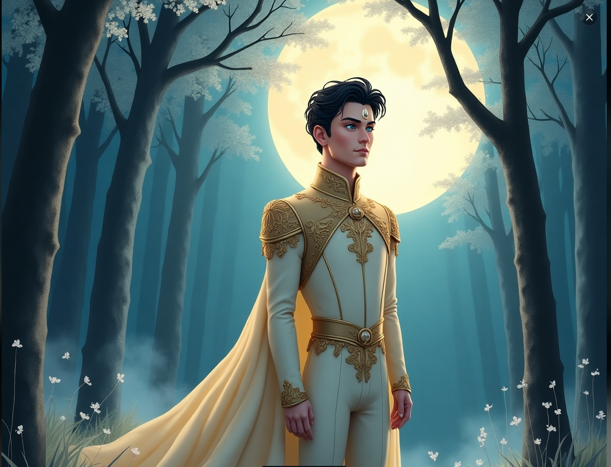

Bir zamanlar uzak bir krallıkta, her gece ay ışığıyla canlanan bir prens yaşardı...
Bir varmış bir yokmuş, uzak bir diyarın en yüksek tepelerinden birinde, yalnız bir prens yaşarmış. Adı Ayhan olan bu prens, babasından krallığı devralmak yerine, ay ışığının peşinden gitmeyi, geceleri gökyüzünde parlayan ayın ışıltısına hayran kalmayı tercih edermiş. Bir akşam, Ayhan bir yıldızın kayıp düşüşünü görür. Gözleri büyür, kalbi hızla çarpmaya başlar. O an içindeki gizemli bir his, onu ay ışığının kaynağını aramaya sürükler. Prens, gece boyunca dağları, vadileri, denizleri geçer ve nihayetinde büyük bir ormanın derinliklerinde, ay ışığının yansıdığı bir göletin kenarına ulaşır. Bu göletin ortasında, suyun üzerinde parıldayan bir gölge vardır. Prens, dikkatlice yaklaşır ve suyun dibine bakarken, orada bir su perisiyle karşılaşır. Peri, Ayhan’a gülümseyerek şöyle der: “Sen, gökyüzünün ışığının peşinden gelen tek insansın. Ama sana bir sır vermek isterim. Ay ışığı, sevgi ve huzurun simgesidir. Onu sadece kalbinde iyilik ve saf sevgi taşıyanlar görebilir.” Peri, parıldayan elini suya daldırır ve birden göletin suyu parlamaya başlar. Su, yıldızlar gibi pırıl pırıl olur ve bir anda Ayhan, ay ışığının kaynağını görebileceği bir yere ulaşır. Orada, sadece ay ışığını görmekle kalmaz, aynı zamanda kendisinin içindeki gerçek huzuru da keşfeder. Peri, Ayhan’a son bir öğüt verir: “Senin krallığın, sadece toprakla değil, insanlarının kalpleriyle de yönetilir. Gerçek ışık, dış dünyadan değil, iç dünyandan gelir. Sen de bunu bulduğunda, halkını aydınlatırsın.” Prens, periyle vedalaşır ve geri dönerek krallığına döner. Fakat artık eski gibi değildir. İçindeki huzuru, sevgiyi ve bilgeliği bulmuş, halkına neşe ve iyilik getirmek için hazırdır. Krallığını barışla yönetir, adaletle hükmeder ve en önemlisi, kalbinde taşıdığı ışığı herkese ulaştırır. Ve o günden sonra, her gece gökyüzündeki ay ışığına bakarken, Prens Ayhan, gerçek ışığın içindeki sevgiden geldiğini bilir. Ve masal burada biter.
Masalın devamı burada olacak. Burada görsellerle desteklenecek ve masal tamamlanacak...